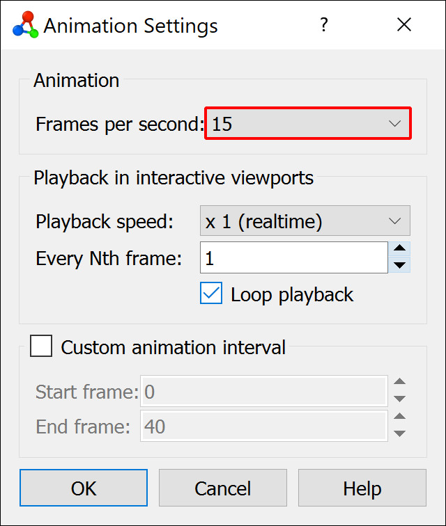
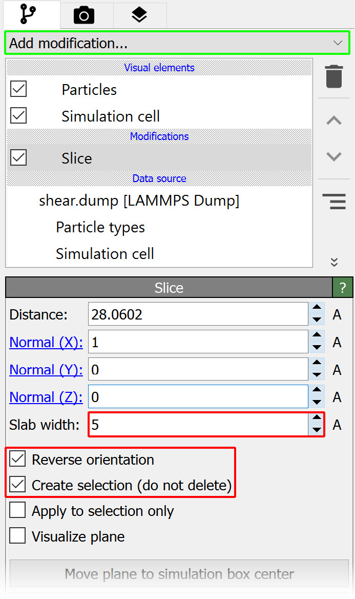
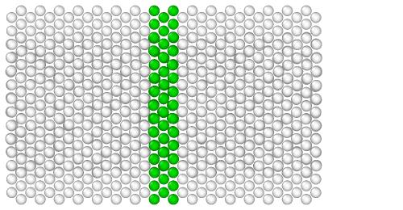
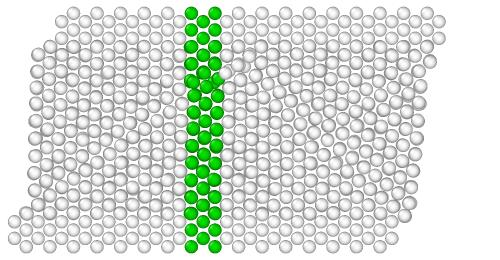
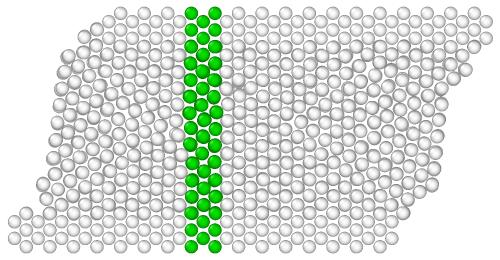
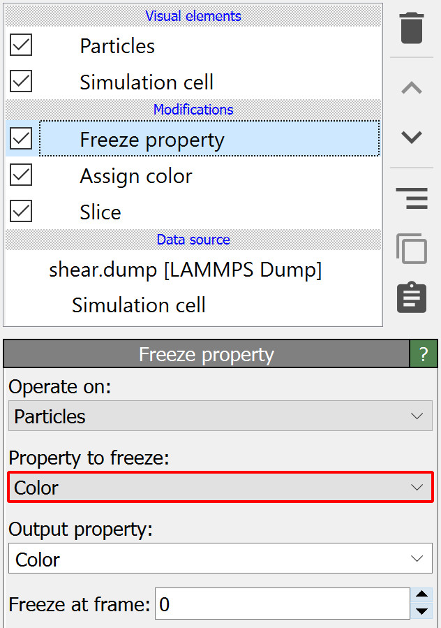

Motion visualization with marker particles

In this step-by-step tutorial, you will create an animation from an MD simulation of a simple shearing experiment as shown on the right. You will learn how to highlight a group of atoms, initially located in a narrow region, with a marker color to visualize the atomic motion in the interior of the crystal during the course of the simulation.
In particular, you will learn more about the purpose of the Freeze property modifier in OVITO, which helps you preserve the initial selection state of a group of particles.
Step 1: Load simulation trajectory
Start by downloading the simulation trajectory file
shear.dump
for this tutorial to your computer. It was generated from the shear simulation script
found in the LAMMPS examples folder. Use the function
to open the file shear.dump in OVITO.
Step 2: Adjust animation speed
{kind=link}
The simulation trajectory comprises 41 frames as indicated by the numbers in the timeline of OVITO located below the viewports. Drag the time slider with the mouse to skip through the frames of the trajectory, or press the Play button in the animation toolbar to play back the animation in the interactive viewports in a loop.
{kind=link}
The playback speed, i.e. the number of animation frames per second, can be adjusted in the
Animation settings dialog. Open the dialog using
the  button in the animation toolbar and make sure the Frames per second value is set to 15.
This parameter not only affects the playback in the interactive viewports of OVITO but also
the frame rate of movie files written by the program.
button in the animation toolbar and make sure the Frames per second value is set to 15.
This parameter not only affects the playback in the interactive viewports of OVITO but also
the frame rate of movie files written by the program.
Step 3: Create particle selection
{kind=link}
We now insert the Slice modifier into the pipeline to select all particles within a narrow slab of the crystal. Open the Add modification… drop-down list and select Slice from the Modification section. The newly inserted modifier appears as a new item in the pipeline editor.
While the Slice modifier’s normal operation is to actually delete all particles on one side of the slicing plane, we can tell the modifier to only select the particles by activating the option Create selection (do not delete). Furthermore, set the Slab width to 5.0 to make the slab five angstroms wide and check Reverse orientation to select the particles located in between the two parallel planes.
Step 4: Color the marker particles
OVITO highlights the selected particles using a bright red color. However, the actual color of these particles did not change yet. The red color is only visible in the interactive viewports of the program to indicate which particles are currently selected, but if you would render an output image or a movie of the system now (see step 6), these particles would still appear in their original gray color like the rest of the crystal.
You have to actively change the color of the selected particles by inserting another modifier into the pipeline. Open again the Add modification… drop-down list and select Assign color from the Coloring section. The Assign color modifier assigns a new uniform color of your choice to the currently selected particles. Let’s use a green color:
  {kind=link}
{kind=link}
{kind=link}
Step 5: Freeze the particle colors
{kind=link}
When looking at the time sequence above, you will notice that the set of green marker particles is not quite right yet: The green slab remains exactly straight even though the crystal is deforming. Different particles turn green as they enter the selection region and, after leaving the region, they become white again.
The reason for this is that the Slice and Assign color operations are (re-)performed dynamically on each frame of the simulation trajectory. OVITO updates the results of these modifiers automatically whenever their input state changes, i.e., when particles move during the course of the simulation.
Often times this is exactly the behavior one needs, but here in this tutorial it is not: We’d rather like to create a static set of green marker particles, which remains unaffected by the particle motion. In other words, once the particle selection has been defined at the beginning of the simulation, it needs to be frozen to preserve it across the entire timeline. For this purpose, OVITO provides the Freeze property modifier.
Add this modifier to the pipeline as usual and change the Property to freeze to Color. This tells the modifier to
take the original colors of the particles from animation frame 0 and override the current colors with them in all other frames of the trajectory.
Thus, the effectively assigned particle colors will now remain static, replacing the otherwise dynamic coloring produced by the combination of modifiers Slice and Assign color:
{kind=link}
{kind=link}
{kind=link}
Note
Note that we have placed the Freeze property modifier at the top of the modifier stack in the pipeline editor, which means it will be executed last - after the two other modifiers have performed their actions. This ordering is important for two reasons: The Freeze property modifier is only able to preserve the particle state produced by modifiers preceding it in the pipeline. The effect of subsequent modifiers, in contrast, will not be visible to Freeze property. Furthermore, we want the Freeze property modifier to be the last one changing the colors of the particles. Placing additional modifiers behind it in the pipeline, which introduce again some dynamic coloring, might undo the step of freezing the particle colors.
{kind=link}
An alternative approach, leading to virtually the same results, is to let the Freeze property modifier freeze the selection state of the particles instead of their color state.
To do this, reorder the modifier sequence as shown in the second screenshot and change the Property to freeze to Selection.
Now Freeze property will preserve the particle selection created by Slice in frame 0 of the trajectory, and Assign color will use that frozen
selection state as input to always color the same set of particles.
Step 6: Render a movie
To complete this tutorial you will now render a movie of the simulation and save it as a video file.
Switch to the Render tab of the command panel and set the rendering range to Complete animation.
Click Choose… and specify the name and format of the video file to be written by OVITO, e.g. shear_marker.mp4.
The option Save to file should now automatically be turned on.
{kind=link}
Make sure the Top viewport is currently active. If there is no Top viewport, switch the current viewport to top view using the viewport menu. A Top viewport shows the current scene from above, along the negative z-axis, using a parallel projection.
Finally, press the button Render active viewport to start the rendering process.
Tip
To further refine the visualization you may want to perform a few additional actions:
Turn off the display of the Simulation cell visual element in the pipeline editor.
Adjust the display radius of the particles in the Particles visual element to a value of 1.0.
Activate in the viewport menu to check the visible viewport region before rendering the video.
Download tutorial solution
In case you would like to skip right to the end of this tutorial or verify your own solution, an OVITO session state file is available.
Download the state file shear.ovito
and save it in the same folder as the trajectory file shear.dump. Use the
menu function to load it in OVITO.
If you encounter any problems with this tutorial, please drop us an email at support@ovito.org to help us improve the instructions.